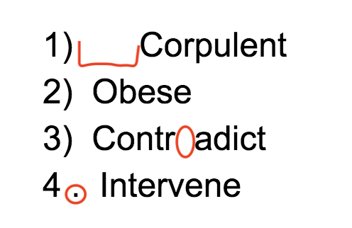
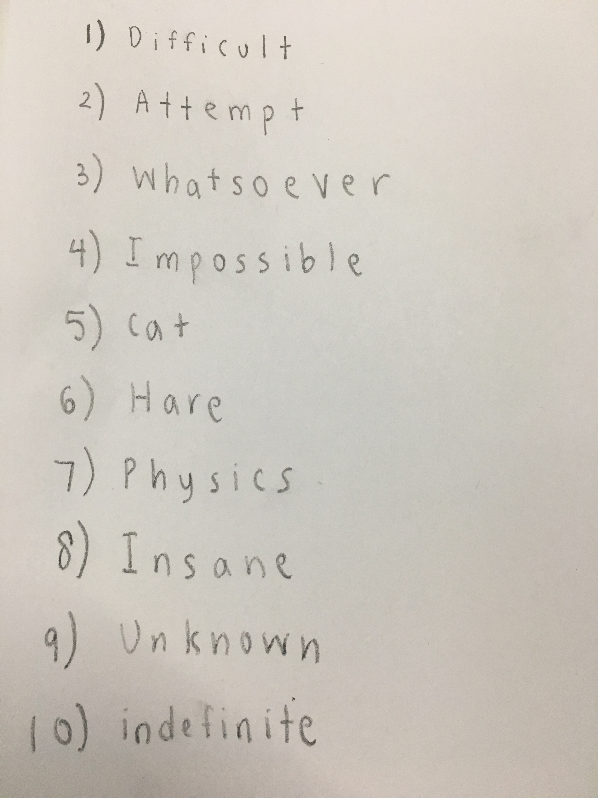
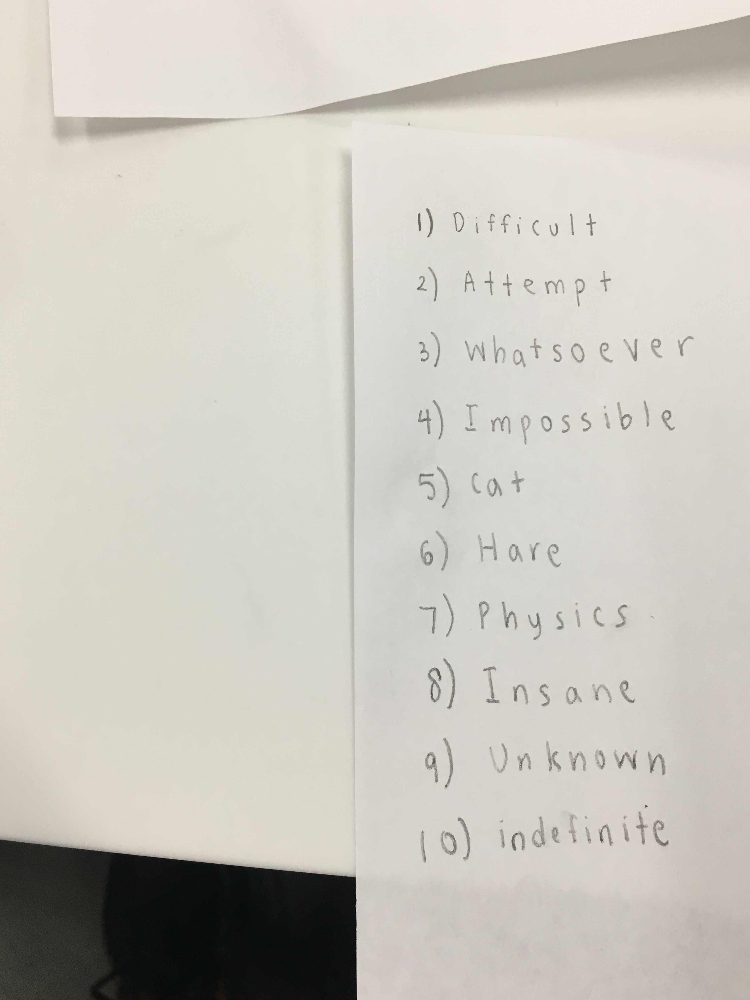
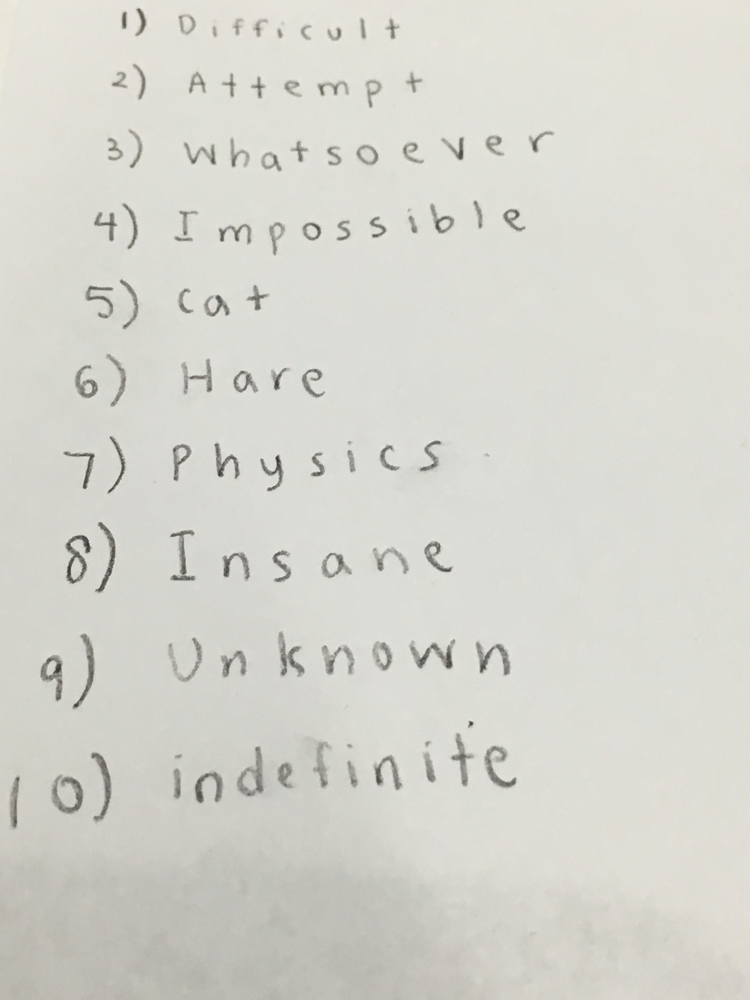

Tutorial
Instructions
In order to help you fully understand the workings
of Writelet, please read this introductory Tutorial!
Common Mistakes
Here's an image with a couple of mistakes. The errors
are listed with their corresponding number:
1) The space between the '1)' symbol and word is too large.
2) This answer completely fine.
3) The space between the word is too large.
Our grader may read it as two seperate words.
4) There is a '.' instead of a ')' symbol.

Taking the Picture
A Good Picture

Notice how the image only has numbers with their
respective answers, and the lighting is relatively consistent.
A Bad Picture

This picture contains a lot of useless information
such as the image of another paper, the table, and
some black space at the bottom. Pictures should be
clear and concise.
Another Bad Picture

This picture is taken at a diagonal angle. This won't hinder
the Machine Learning algorithm that much, but to ensure
the highest accuracy from our training model we encourage
pictures to be taken directly above the paper.
Links
Let's take a picture!